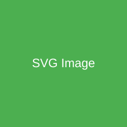

Лабораторна робота №6
Макет сторінки журналу
Плаваючий елемент, багатоколонковий текст і модальне вікно на одній адаптивній вебсторінці.
Ідея макета

У цьому навчальному макеті коротка ілюстрація розташована ліворуч, а текст обтікає її завдяки властивості float. Після вступу матеріал розбитий на дві колонки. Кнопка внизу праворуч закріплена відносно вікна, а натискання відкриває модальну картку над сторінкою.
Текст після плаваючої ілюстрації повертається до звичайного потоку, бо контейнер очищує обтікання через clear: both.
Вебсторінка як простір для читання
Добре спроєктована сторінка допомагає читачеві швидко знайти головну думку. Заголовки задають послідовність, короткі абзаци полегшують перегляд, а достатній міжрядковий інтервал робить текст зручним для тривалого читання. На широкому екрані матеріал можна подати в кілька колонок, зберігаючи природний порядок тексту.
Багатоколонкове компонування CSS створює газетний ритм без ручного поділу тексту на окремі контейнери. Властивості column-count, column-gap і column-rule визначають кількість колонок, відстань між ними та роздільну лінію. На вузькому екрані кількість колонок зменшується, щоб рядки залишалися читабельними.
Плаваючий елемент корисний, коли невелике зображення має бути поруч із текстом. Значення float: left або float: right виводить його до краю контейнера, а рядки тексту обтікають зображення. Для завершення обтікання застосовують clear або сучасний контейнерний прийом із псевдоелементом.
Модальне вікно є окремим шаром поверх основного вмісту. Для нього важливі затемнення фону, зрозуміла кнопка закриття, керування клавіатурою та правильний порядок накладання. У цій роботі використано вбудований елемент <dialog>, метод showModal() і кнопки, що закривають діалог.
Позиціонування визначає, де елемент розташований відносно документа або батьківського контейнера. relative зберігає місце елемента у потоці й задає контекст для абсолютно позиціонованих нащадків. fixed прив’язує плаваючу кнопку до вікна перегляду, а z-index допомагає поставити її та модальне вікно на потрібні шари.
На малих екранах сітка і багатоколонковий текст перебудовуються в одну колонку. Кнопки мають достатній розмір для дотику, фокус помітний із клавіатури, а модальне вікно не виходить за межі екрана. Так CSS-приклади працюють і як демонстрація властивостей, і як цілісна сторінка.
Інтерактивний елемент
Відкрий модальне вікно
Натисни кнопку, щоб побачити окремий шар із коротким описом використаних властивостей.